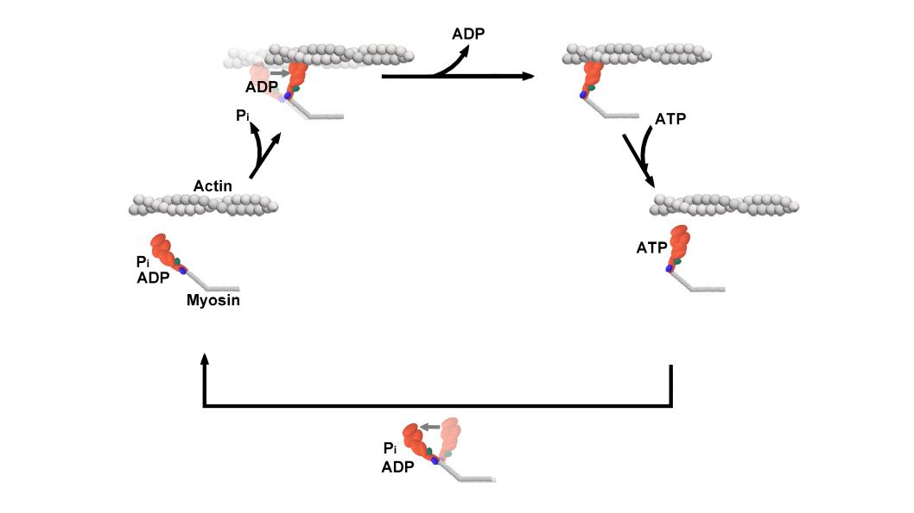

Prerequisites
This is additional background information that will be helpful for getting up to speed if you don’t have a background in muscle physiology or biophysics. This is a crash course if you are on the need-to-know basis. This can also serve as a sort-of replacement for Chapter 2 for those not wanting to get too deep into myosin structure/function, but will cover enough to help get the main points of the dissertation to come across.
Muscle Structure


Skeletal muscle has a hierarchical organization that is similar to a bag of pull-and-peel twizzlers. The whole unopened bag of twizzlers is analogous to the whole muscle - all this sweet stuff wrapped in neat and tidy packaging which is like an entire muscle being packaged inside its most outer layer of connective tissue (epimysium). If you could open up a muscle like a bag of twizzlers we would see bundles of muscle fibers called fascicles which would be like each individual pull-and-peel tweezler unit, many tiny twizzler strands bound together. When eating pull-and-pull twizzlers traditionally you should “pull” and “peel” off one of the tiny twizzler strands. If you could “pull” and “peel” a muscle fasicle apart you would be left with one single muscle fiber. A muscle fiber is the cellular level of muscle since a fiber is a cell. These cells just happen to be long and cylindrical so they are often called fibers even though the terms “fibers” and “cell” can be used interchangeably. The fiber contains many other traditional cellular elements (nuclei, mitochondria, a kind of reticulum, etc.). Although, here is where my twizzler analogy starts to fall apart a smidge…If we looked “down-the-barrel” at the muscle fiber we would see that the fiber is comprised of many myofibrils, whereas our twizzler is, er, just a twizzler. Nonetheless, each of these myofibrils is made of repeated units in series called sarcomeres. An individual sarcomere contains the myofilaments or thick- and thin-filaments. The thin-filaments are made of actin (a protein) and the Ca2+-sensitive regulatory proteins that help turn the muscle on and off, and the thick-filaments are made of myosin (a protein). Myosin is a molecular motor and is responsible for using ATP to generate force and motion. When muscle is activated by the central nervous system, ultimately, the myosins will bind to actin, produce a displacement of the actin which shortens the sarcomere causing whole muscle “contraction”. This is the basis of the sliding-filament theory of muscle contraction.
Myosin/Cross-bridge cycle


Myosin is a molecular motor that uses ATP to generate force and motion. There are many types of myosin. The myosin in muscle is a class II myosin (there are different types of myosin II isoforms in skeletal muscle as well, mainly slow type 1 and fast type 2, or MHC-1 and MHC-2; MHC = myosin heavy chain). In fact there are numerous classes of myosins each containing several isoforms each. However, the motor-domain, or the part of the myosin head that binds actin and ATP is structurally similar across all myosins. They all breakdown ATP and generate force in a process called the cross-bridge cycle.

The cross-bridge cycle is a “mechanochemical” scheme which means that there is a dynamic interplay between mechanics and biochemistry that control myosins structure and function. The changes that occur effectively modulate its affinity for actin vs ATP/hydrolysis products. Myosin produces force by rotation of its lever arm when attached to actin. Furthermore, myosin can be unattached or attached to actin (bottom vs top row in a diagram of the cross-bridge cycle) and its lever arm can be set in a pre- or post-powerstroke position.
Unconventional myosins
Myosin molecules in muscle polymerize to form bi-polar thick filaments, however many myosins exist as single double headed molecules and are involved in intracellular cargo transport. Myosin V has a tail that is specific for binding cargo and walks around cells on actin filaments. While traditionally I am interested in myosin because of my background in exercise physiology, human performance, and muscle; I have become increasingly more interested in the unconventional myosins (unconventional myosins are typically the ones not expressed or involved with muscular contraction). For one, I find them fascinating as they work as tiny molecular machines transporting things around the cell, but also practically they are easier to experiment with because some of them like myosin V have a high duty ratio and rate limiting (slower) rate of ADP release which makes which makes it easier to observe single molecule interactions in a laser trap assay at high ATP concentrations.

The Laser trap
To study and understand how myosin works we can use a single molecule laser trap. This allows us to collect on data on the interaction between one single molecule of myosin and one actin filament.


Like a tractor beam from Star Trek or other Sci-Fi films, light can be used to trap small particles. By shooting a laser beam through a microscope slide small glass beads can be made sticky to actin filaments and held in an optical trap. Briefly, the incoming laser imposes two forces onto a particle. 1) The laser acts as a “photon-firehouse” which exhibits a scattering force and pushes things away from the beam. However, if a particle is close enough to the center of the trap some light is refracted through the particle and causes 2) a gradient force that is in opposition to the scattering force. The forces cancel and the particle is stabilized and effectively “trapped” in light.

In our lab, we time share the location of one laser beam to create two optical traps allowing us to trap two small beads simultaneously. We can then string up actin filaments to create a “bead-actin-bead” (or dumbbell) setup. We can move the microscope stage to “drive” the setup around as we look for larger “pedestal” beads on the microscope slide surface that are sparsely coated with myosin. Lowering the towards the surface will bring the actin towards the myosin and the proteins will stochastically interact.
Laser trap data is a time series
The position of the trapped bead can be monitored by a detector. Since myosin is stiffer than the laser trap when myosin binds it causes a reduction in the variance of the baseline signal and when myosin undergoes a powerstroke it displaces the beads laterally from the center of the trap. Laser trap data is a time series data set where we are collecting the bead position over time.

Analysis of data by eye is not well accepted in the field (further detailed in the lit review) so we must rely on automated event detection methods (several methods described in detail in the lit review). Our setup has a sampling frequency of 5 kHz. I feel like I am always getting headaches trying to convert from ‚Äúdata point‚Äù time to milliseconds in my head‚Ķso we collect 5 data points every 1 millisecond for those of you keeping up at home üòâ.